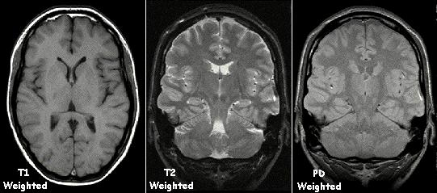

Integra información
Sus hemisferios y lóbulos participan en la percepción, el pensamiento, la memoria, el lenguaje y los movimientos voluntarios.

Un recorrido por las principales regiones del encéfalo, sus funciones y la forma en que los cortes anatómicos permiten estudiar estructuras que no vemos desde afuera.
El encéfalo recibe información de los sentidos, la integra y coordina respuestas. También participa en el movimiento, el lenguaje, la memoria, las emociones y la regulación de funciones automáticas. No trabaja aislado: se comunica con la médula espinal y con todo el cuerpo mediante el sistema nervioso.
Sus hemisferios y lóbulos participan en la percepción, el pensamiento, la memoria, el lenguaje y los movimientos voluntarios.
Coordina la precisión, el equilibrio y el aprendizaje motor. No inicia todos los movimientos, pero ayuda a hacerlos más ajustados.
Conecta el encéfalo con la médula y participa en el control automático de la respiración, la frecuencia cardíaca y la vigilia.
Transporta señales entre el encéfalo y el cuerpo y permite respuestas reflejas rápidas ante algunos estímulos.
Estos dibujos son esquemas didácticos, no imágenes de resonancia magnética. En una RM real, las estructuras se reconocen por diferencias de señal y los tonos dependen de la secuencia utilizada.
Divide el encéfalo en derecha e izquierda y permite observar estructuras centrales.
Muestra una “rebanada” de adelante hacia atrás y facilita comparar ambos hemisferios.
Se observa como si miráramos desde arriba; ayuda a seguir la forma y la simetría del encéfalo.
Una resonancia magnética no es una fotografía: es una técnica que produce imágenes a partir de señales de los tejidos en un campo magnético. En este ejemplo se comparan tres contrastes: T1, T2 y densidad protónica (PD). El aspecto cambia porque cada secuencia resalta propiedades diferentes del tejido.

Objetivo didáctico: aprender a leer una imagen sin convertirla en una herramienta de diagnóstico.
¿Por qué un reflejo puede producirse antes de que seamos conscientes del dolor?
¿Qué relación hay entre el tronco encefálico y la respiración automática?
¿Qué corte elegirías para comparar los dos hemisferios?